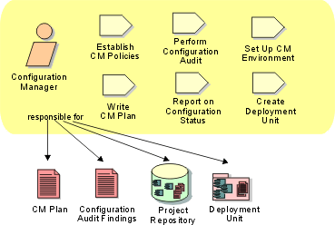

Role:
Configuration Manager
The configuration manager provides the overall Configuration
Management (CM) infrastructure and environment to the product development team.
The CM function supports the product development activity so that developers and
integrators have appropriate workspaces to build and test their work, and so
that all artifacts are available for inclusion in the deployment unit as
required. The configuration manager also has to ensure that the CM environment
facilitates product review, and change and defect tracking activities. The
configuration manager is also responsible for writing the CM Plan and reporting
progress statistics based on change requests.

Staffing
The configuration manager should understand configuration
management principles, and preferably have experience or training in the use of
Configuration Management tools. A good configuration manager pays
attention to detail. He/she should be assertive, in order to ensure that
developers do not bypass configuration management policies and procedures.
Copyright
© 1987 - 2001 Rational Software Corporation
|  Roles and Activities >
Roles and Activities >
 Configuration Manager
Configuration Manager